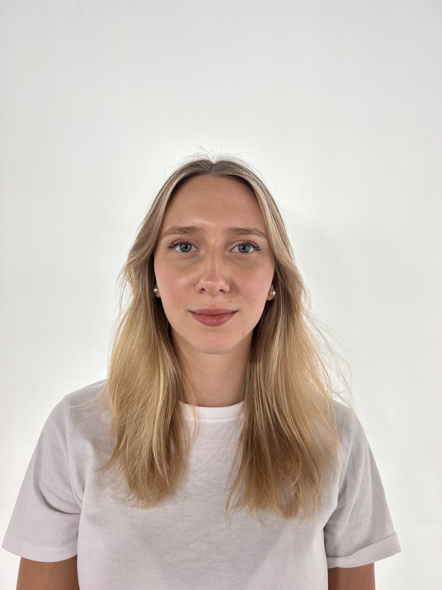

Mediendesignerin aus Wien
Hallo, ich bin
Miriam
Koban.


Blick über die Dächer der Innenstadt
Über mich
Neugierig auf das Zusammenspiel von Bild, Text und Technik.
Ich verbinde visuelles Denken mit einem Gespür für gute Geschichten.
Mein Weg führt durch Sport, Medientechnik, IT und Journalismus. Jede Station hat meinen Blick darauf geschärft, wie Ideen entstehen und wie man sie verständlich macht.
Heute studiere ich Publizistik und Kommunikationswissenschaft und bringe meine gestalterische Ausbildung in neue mediale Zusammenhänge ein.
Mein Weg
Was mich prägt.
-
AHS Parhamplatz
In der Unterstufe mit Schwerpunkt Sport habe ich gelernt, diszipliniert zu denken und mit Energie an Herausforderungen heranzugehen.
-
HTL
An der HTL habe ich Gestaltung und Technik miteinander verbunden. Von visueller Kommunikation bis zu Informationstechnologien.
-
Die Presse
Während meiner Praktika in der Entwicklungsredaktion lernte ich Einblick in digitales Journalismus und die Zukunft redaktioneller Formate.
-
Publizistik & Kommunikationswissenschaft
Heute vertiefe ich mein Verständnis dafür, wie Medien wirken, Geschichten Menschen erreichen und Kommunikation unsere Gesellschaft prägt.
Kontakt
Lass uns reden.
Offen für Austausch, neue Perspektiven und gemeinsame Ideen an der Schnittstelle von Medien und Gestaltung.